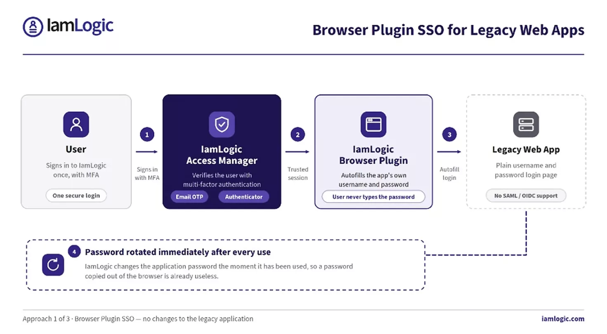
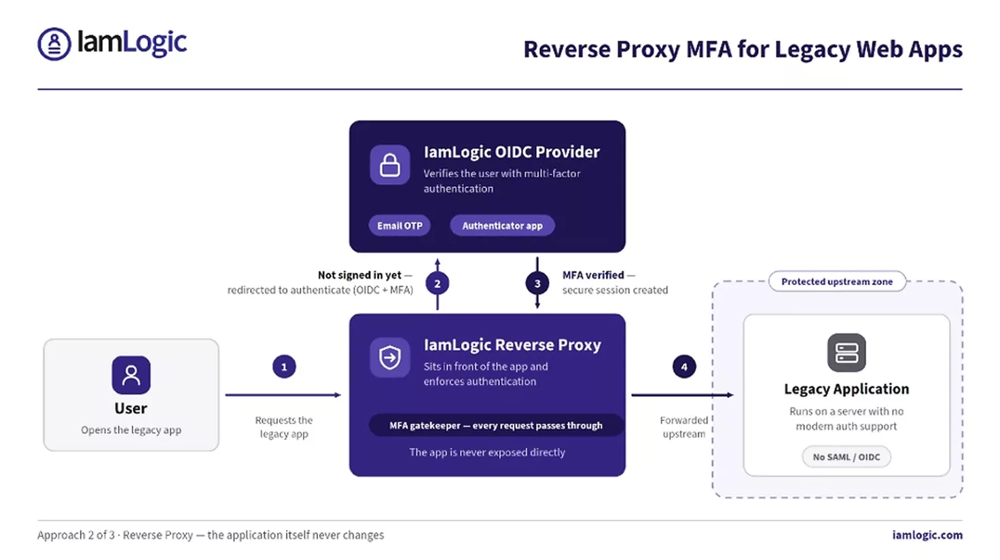
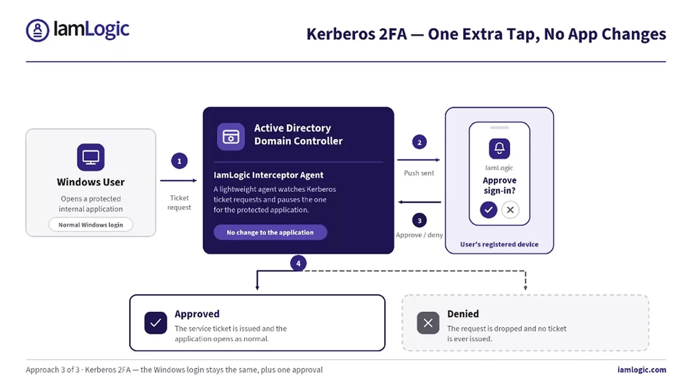

Why legacy apps are so hard to protect
Legacy and custom-built applications were made before modern login standards like SAML, OAuth2 and OpenID Connect (OIDC) became common. Because they don’t “speak” these standards, you can’t simply plug in an MFA service. The usual fix is to re-engineer the application — which is slow, costly and risky, especially for apps that nobody wants to touch. Many teams give up and leave these apps protected by a password only, exactly where critical data often lives.
IamLogic takes a different route. Instead of rebuilding the application, it adds a layer of MFA around it. Here are the three approaches, from simplest to most advanced.
1. Browser Plugin SSO — for old web apps
Some legacy web applications only offer a plain username-and-password login page and can’t support modern single sign-on (SSO). For these, IamLogic Access Manager provides a browser plugin.

- One secure login. The user signs in to IamLogic once (with MFA). The plugin then opens the legacy app for them.
- Automatic autofill. The plugin fills in the app’s username and password inside its own login screen — the user never has to know or type the password.
- Password rotation after every use. To stop passwords being stolen or copied from the browser, IamLogic automatically changes the password immediately after it is used. A stolen password is already useless.
This is the fastest option: no changes to the app, and the login stays exactly as it looks today — just safer.
2. Reverse Proxy — an MFA gatekeeper in front of the app
For web applications that can’t handle SSO or MFA at all, IamLogic places a reverse proxy in front of the app. A reverse proxy is simply a checkpoint that every request must pass through before it reaches the application.

Here is how it works, step by step:
- Step 1 — The user tries to open the legacy application. The request hits the IamLogic Reverse Proxy first.
- Step 2 — Because the user isn’t signed in yet, the proxy redirects them to the IamLogic OIDC Provider to verify their identity with MFA (for example, an email OTP or an authenticator app).
- Step 3 — Once MFA is confirmed, the identity is trusted and a secure session is created.
- Step 4 — Only now does the proxy forward the request to the legacy application in the protected zone.
The application itself never changes and is never exposed directly. It only ever receives requests that have already passed MFA.
3. MFA for Kerberos Applications — no app changes
Many internal Windows and on-premises applications use Kerberos, an older authentication system built into Active Directory. Kerberos was never designed for modern MFA. IamLogic adds a second factor to it using push-based 2FA — without changing the application.

A lightweight IamLogic interceptor agent sits on the domain controller and watches Kerberos ticket requests. When a user tries to open a protected application, the agent pauses the request and sends a push notification to the user’s registered device. If the user approves, the ticket is issued and the app opens as normal. If they deny it, the request is dropped. The user’s normal Windows login stays the same — they simply get one extra tap to approve.
Which approach is right for you?
- Browser Plugin SSO — best for legacy web apps with a simple login page.
- Reverse Proxy — best for web apps that can’t support SSO or MFA and need a gatekeeper in front.
- Kerberos 2FA — best for internal Windows / Active Directory apps that use Kerberos.
In many organizations, all three are used together to cover the full mix of old and custom applications. The result is the same everywhere: strong MFA on every app, with no rebuilds, no downtime and no disruption to users.